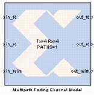

|
|
The Multipath Fading Channel Model block implements a model of a fading communication channel. The model supports both Single Input/Single Output (SISO) and Multiple Input/Multiple Output (MIMO) channels. The model provides functionality similar to the Simulink 'Multipath Rayleigh Fading Channel' block in a hardware realizable form. This enables high speed hardware co-simulation of entire communication links.The block implements the Kronecker model. This model is suitable for systems with antenna arrays not exceeding four elements. The primary model parameters are: